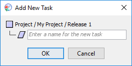

When you are working on a project, sophisticated tools like the Work Breakdown Structure Editor and the Hierarchy Editor are provided to create, edit, and reorganize tasks. But sometimes, you just need to create a single new task, and it's more convenient to do this without leaving the main dashboard toolbar. The Add Task button is provided for this purpose.
Clicking this button will allow you to create a new task in the dashboard. The window that appears will show you where the new task will be created, and will allow you to enter a task name.

The new task will be created under the named parent, and will immediately follow the currently selected task.
In most cases, this means that the new task will appear in the hierarchy immediately after the task that was selected when you clicked the button. But if the previously selected task belongs to a rigidly structured process (such as the PSP), it may not be possible to insert your new task inside. In that case, the new task will immediately follow the rigidly structured task. (In the screen shots above, Component B was a PSP task, so the new task will be created in "Release 1" immediately following Component B.)
When you add a task to a team project, you can also choose the process phase that the new task should belong to. By default, the new task will have the same phase type as the task you were previously working on. But you can click the node icon to select a different task type.
After you create a new task, it's a good idea to estimate the time it will require. You can do this by clicking the Percent Spent Indicator.
For now, the Add Task button does not provide any functionality for editing or deleting tasks. If you add a task by accident, or if you mistype the name of the new task, you will need to fix the mistake using either: